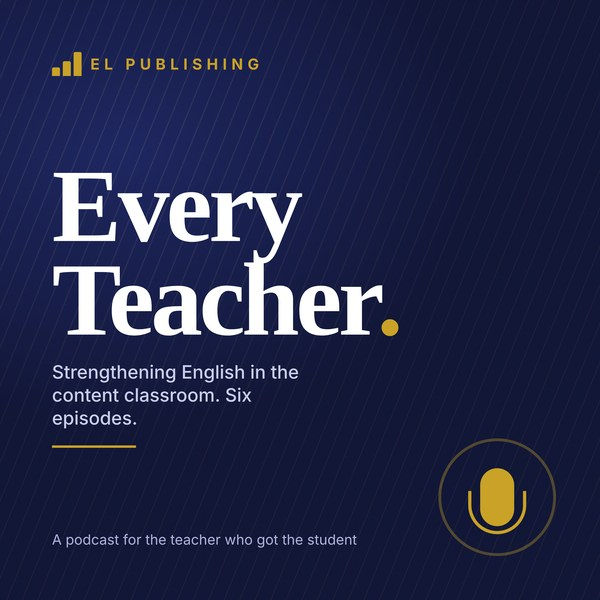

1
Who is in your room
Emerging and Progressing are not labels, they are predictions. What a level-one, a level-two and a level-three student can already do in your class, and the one habit that helps all of them.
EL PUBLISHING · FOR EVERY CONTENT TEACHER · PODCAST
Six conversations, five to six minutes each, for the teacher who teaches content, not English and has English learners in the room. What Emerging and Progressing students can do, what to change tomorrow, and what to stop worrying about.
Marcus teaches ninth-grade biology. Elena is the EL specialist. Both voices are synthesized; the scripts are written and edited by Richard A. Daniel, M.Ed.

One episode a week at a department meeting is a six-week PD series with no slides to make: play it, then take the two Talk about it questions under the transcript. Or listen in the car; the whole series is 31 minutes.
Every tool the episodes mention is on this hub and free: Cognate Hunt, the Sentence-Frame Bank, the leveled readables, the parent letters and the LSP Builder.
Paste this feed address into Apple Podcasts (Library → Follow a show by URL), Pocket Casts, Overcast or any app that takes an RSS link:
https://radan55.github.io/everyteacher/podcast.xml
Or just press play here. Each episode also downloads as an MP3 for a shared drive.
Emerging and Progressing are not labels, they are predictions. What a level-one, a level-two and a level-three student can already do in your class, and the one habit that helps all of them.
Comprehensible input is not watered-down input. Five words before the lesson, cognates on the board, chunk the talk, show everything twice, and the two-minute test for whether they got it.
Speaking is where English grows fastest and where most classrooms give the least time. Sentence frames by level, structured pair talk, wait time, and how to ask a question a level-one student can answer.
The textbook is not the enemy, but it is dense. Before, during and after a reading, the thirty-second preview, the one sentence to unpack, leveled versions of the same passage, and when to read aloud.
From a labeled diagram to a lab conclusion. Why the blank page is the problem, word banks and frames, the two-minute quick write, feedback on one thing, and what a good level-two paragraph looks like.
Accommodations versus modifications, what to grade and what to let go, the state tests your students actually take, the Language Service Plan you're supposed to have a copy of, and the five people who can make your year easier.
Click any line to jump the audio to it. The line being spoken is highlighted while an episode plays.
MarcusWelcome to Every Teacher, the podcast from EL Publishing. I'm Marcus. I teach ninth-grade biology, and three years ago a student walked into my second period who did not speak a word of English. I had no idea what to do. I'm here with Elena, who is the EL specialist in our building, and who basically saved that year for me.
ElenaThat's generous. You saved it. I just showed up with a list.
MarcusYou showed up with a list. So this series is that list. Six short episodes for the teacher who teaches content, not English, and has English learners in the room. Today, episode one: who is actually in your room. Because I think most of us get a roster with the letters E L next to a name, and a number, and that's it.
ElenaRight. And the number matters more than the letters. In Mississippi the English test is the E L P T, which is the ELPA twenty-one test. It gives a level from one to five in each of four domains: listening, speaking, reading and writing. And then a student is called Emerging, Progressing, or Proficient. Emerging is roughly levels one and two. Progressing is roughly three and four. Proficient is five, and that's when a student exits.
MarcusSo when I see Emerging on my roster, what does that student actually do in a biology class?
ElenaLet's split it. A level one has usually been in the country for a few months or less. They can follow a routine they've seen before. They can point, match, sort, copy, and say a single word or a memorized phrase. What they can't do yet is follow you talking at normal speed for ten minutes, or read a paragraph of a textbook. And here's the important thing: that's not a learning problem. That's a language problem, and it's temporary.
MarcusThat was my first mistake, honestly. I thought the student couldn't do biology. He could do biology. He'd done biology, in Spanish, in a pretty good school.
ElenaThat's incredibly common. A newcomer often knows the content better than you'd guess. They know what a cell is. They just don't know the word cell. And a lot of the time, the word they know is a cognate. Célula. Cell. Fotosíntesis. Photosynthesis. Half of your academic vocabulary is sitting right there in Spanish already.
MarcusOkay, so that's level one. What's a level two?
ElenaA level two can handle short, familiar sentences. They can answer a yes or no question, or a question with a choice in it. Is this a plant cell or an animal cell. They can write a sentence if you give them the frame. They still need visuals, they still need you to slow down, and they still get lost when the lesson turns into fifteen minutes of talking.
MarcusAnd Progressing? Three and four?
ElenaThis is the student most teachers underestimate in the other direction. A level three or four sounds fluent in the hallway. They joke, they argue, they've got the social English down. So teachers assume the academic English is there too. It usually isn't yet. They can read a grade-level text with support, they can write a paragraph, they can explain their thinking out loud, but the dense stuff, the textbook passage with four clauses in one sentence, the word problem where the question is buried in the middle, that's where they stall. And because they sound fluent, nobody notices.
MarcusThat one hits home. I had a student I was sure was just not trying. Her writing was two sentences. Turned out she could tell me the entire process of mitosis if I let her talk, and she just couldn't get it onto paper yet.
ElenaThat's a level three. Speaking ahead of writing. Very typical. And this is why the domains matter. Pull up the four scores, not just the overall. A student with a reading of four and a writing of two needs a different thing from you than a student with the reverse.
MarcusWhere do I find the four scores?
ElenaAsk the EL teacher, or the counselor. In a lot of districts it's in the student information system. And if there's a Language Service Plan, an L S P, the scores are on page one. You're actually supposed to have a copy of that plan. It lists the accommodations you're expected to provide. If nobody has given it to you, ask. That's not being pushy. That's compliance.
MarcusOkay. So I know my levels. What's the one thing I do with that tomorrow?
ElenaOne habit, for every level. Every single day, every student gets English in and English out. In means they understand something: you said it, they got it, because there was a picture, a gesture, a cognate, a model. Out means they produce something: a word, a sentence, a label on a diagram, a sentence in a pair. The level decides how big the in and the out are. For a level one the out might be one word. For a level four it's a paragraph. But nobody sits for ninety minutes and produces nothing.
MarcusIn and out every day. That's doable.
ElenaIt's doable. And it's the whole game. Everything else in this series is just ways to make the in understandable and the out possible.
MarcusBefore we go, give me the thing to stop worrying about.
ElenaStop worrying that you have to teach English. You don't. You teach biology. Your job is to teach biology in a way a learner of English can get into. The EL teacher handles grammar. You handle the language of biology: the words, the sentence shapes that biology uses, the way a lab report is organized. That's your lane, and it's a lane you're already an expert in.
MarcusThat's episode one. Next time: how to make your lesson understandable without watering it down. Every Teacher is from EL Publishing. Everything we mention is free at radan55 dot github dot io slash everyteacher. Thanks for listening.
MarcusThis is Every Teacher, from EL Publishing. I'm Marcus, I teach biology. Elena is our EL specialist. Episode two. Last time you said the whole game is English in and English out, every day. Let's do the in. How do I make a biology lesson understandable to a student who is at level one or two?
ElenaThe phrase in the research is comprehensible input. And I want to be clear about what it is not. It is not a simpler lesson. It is not the worksheet from two grades down. It's the same content, delivered so that a learner of English can get a foothold. Same rigor, more handholds.
MarcusGive me the handholds.
ElenaFive of them. First one happens before the lesson. Pick five words. Not twenty. Five. The ones that, if a student doesn't have them, the whole lesson falls apart. For photosynthesis that's probably sunlight, energy, carbon dioxide, oxygen, and glucose. Put them on the board before you start. Say each one. Have the students say each one. Picture next to each. That's three minutes, and it's the best three minutes of the period.
MarcusI used to do a vocabulary list of thirty words on Monday and test it Friday.
ElenaAnd the newcomer learned none of them, because thirty words with no context is noise. Five words, with a picture, used ten times in the next hour, those stick.
MarcusHandhold two?
ElenaCognates. If your English learners speak Spanish, and in Mississippi most of them do, then a huge share of science and social studies vocabulary is already theirs. Energy, energía. Organism, organismo. Democracy, democracia. Write the Spanish next to the English on your word wall. You don't need to speak Spanish. You just need to show the student that the big scary word is a word they already own. There's a tool on the hub called Cognate Hunt. You paste in your reading and it marks the cognates. Takes thirty seconds.
MarcusHandhold three. I'm guessing this is where you tell me I talk too much.
ElenaYou talk too much. Everybody talks too much. Here's the fix: chunk it. Talk for three or four minutes, then stop, and do something. Turn to a partner and say the word for this. Point to the part of the diagram I just described. Thumbs up if this is a plant cell. Then talk for another three or four minutes. A level one student can track three minutes of talk if there's a picture. Nobody tracks fifteen.
MarcusAnd I'm supposed to slow down.
ElenaSlow down, but don't get weird about it. Don't talk louder, don't talk like a robot. Just pause at the ends of sentences. Use the same word for the same thing: if you called it a cell membrane at the start, don't call it a plasma membrane ten minutes later without saying those are the same. Native speakers handle that switch automatically. A learner thinks it's a new thing.
MarcusThat's a good one. I do that constantly. Handhold four.
ElenaShow it twice. Whatever you say, also show. Say it, and point. Say it, and the slide has the diagram. Say it, and write the key word on the board as you say it. Say it, and act it out if you can. Diffusion: you walk across the room and spread your arms out. Every time you give the same idea in two channels, the student who missed it in one channel catches it in the other.
MarcusI have a colleague who teaches world history and says, I can't draw a picture of the Treaty of Versailles.
ElenaNo, but you can draw a timeline. You can show a map. You can show two faces and an arrow, with the words lost and gained. You can show the actual photograph. History is one of the most visual subjects there is; textbooks just hide it behind text. And for history specifically, graphic organizers do a lot of work: cause and effect boxes, a timeline, a compare chart with two columns. The structure carries the meaning when the words can't.
MarcusLast handhold.
ElenaCheck in a way that doesn't require English to answer. Hold up one finger or two. Point to the answer on the diagram. Sort these four cards into two piles. Draw it. A level one student who can't say it can very often show it, and if you only check with questions that need a spoken sentence, you'll think they got nothing when they got most of it.
MarcusLet me try the two-minute version of this on you. Tomorrow I'm teaching the parts of a cell. I put five words on the board with pictures: nucleus, membrane, cytoplasm, mitochondria, and cell. I write núcleo and membrana next to them. I talk for four minutes, then they label a diagram with a partner. I talk for four more, then they sort cards into plant and animal. I check by having everyone point.
ElenaThat's a great lesson. And notice: you didn't change the content. The level one student is doing the same cell as everybody else. The level four student is doing the same cell and also writing the sentence about what the mitochondria does. Same lesson, different size of output.
MarcusWhat do I stop worrying about this time?
ElenaStop worrying about translation apps. Teachers either ban them or hand everything over to them. Neither works. Let a newcomer use one to look up a word. Don't let the whole lesson become a screen. The tool is a dictionary, not a teacher.
MarcusNext episode: getting them to talk. Which is the part I was most scared of. Every Teacher is from EL Publishing. Free, no login, at radan55 dot github dot io slash everyteacher.
MarcusEvery Teacher, from EL Publishing. Marcus, biology. Elena, EL specialist. Episode three. Elena, you said the fastest growth is in speaking. Why is that?
ElenaBecause speaking is where the student finds out what they can and can't say yet. Reading and listening are receptive: you can nod along and think you've got it. Speaking is where the gap shows up, in real time, and gets closed. It's also the domain students use the most socially, so it grows on its own. What doesn't grow on its own is academic speaking: explaining a process, giving a reason, disagreeing with evidence. That has to be practiced in class, and in most classes, it's practiced about zero minutes a day.
MarcusSo how much should it be?
ElenaIn a ninety-minute block, I'd want ten minutes of structured student talk. Not a free-for-all. Structured. Partners, a question, a frame, a time limit, and a job for each person.
MarcusLet's start with the frame. I hear sentence frames a lot. What is one, and why does it work?
ElenaA sentence frame is the sentence with the content missing. The mitochondria produces blank. I think this is a plant cell because blank. The frame carries the grammar, so the student only has to supply the idea. For a level one, that means they can participate in a discussion they'd otherwise sit out. For a level four, you use the frame to push them into more complex language than they'd produce on their own. Although blank, the evidence suggests blank. They wouldn't say that on their own. With the frame, they will.
MarcusSo different frames for different levels.
ElenaFour lanes. Level one: a frame with one blank and a word bank. This is a blank. Level two: a frame with two blanks, or a choice. The cell is a plant cell because it has a blank. Level three: a frame with a reason. I think blank because blank. Level four: a frame with a connector. Blank, however, blank. Or, the evidence that blank is blank. Put all four on the board. Let students pick. They'll usually pick the right one for themselves, and when they pick too low, you nudge.
MarcusWhere do I get the frames?
ElenaYou write them from your own content, which takes about two minutes once you've seen a few. Or there's a Sentence-Frame Bank on the hub, sorted by what you're trying to get them to do: describe, compare, explain, argue. Pull from that.
MarcusOkay, the structure. Walk me through ten minutes of pair talk that doesn't fall apart.
ElenaHere's the routine. One: the question is on the board, and so are the frames. Two: give thinking time. Thirty seconds of silence, students can write a word or two. Three: partner A talks for one minute, partner B listens and then says back one thing they heard. You said blank. Four: switch. Five: you pull two or three answers for the whole class, and you pick who, so it's not the same four hands every time. That's seven or eight minutes, and every student has spoken academic English twice.
MarcusThe say-it-back part. Why that?
ElenaBecause listening is half of talking. And because it protects the newcomer. If a level one student says a word, and their partner has to repeat it, the word was heard. It counted. Nobody got ignored.
MarcusYou said give thinking time. I think I give about one second.
ElenaEverybody gives about one second. The research number is that teachers wait less than a second before calling on someone or answering their own question. For an English learner, that one second is spent translating the question. Count to five in your head. It feels like forever. It isn't. The quality of the answers goes up for every student in the room, not just the English learners.
MarcusHow do I ask a question a level one can actually answer out loud?
ElenaMake the answer small and make the question carry the words. Instead of, what does the nucleus do, ask, does the nucleus control the cell, or store energy. Now the student has the words. They say, control the cell. That's a correct, spoken answer in academic English. Next week you ask, what does the nucleus do, and they've heard themselves say it before.
MarcusChoices. Yes or no. Either or.
ElenaAnd pointing. And finish my sentence. The nucleus controls the. And they say, cell. That's participation. It builds up.
MarcusWhat about pairing? The default is to sit the newcomer next to a kid who speaks Spanish.
ElenaThat's fine for the first two weeks, as a bridge. It's not a plan. After that, rotate partners. The student needs to talk to English speakers, and the English speakers need to learn to talk to them. One rule that helps: the partner's job is not to translate. The partner's job is to say it slower and show it. If they translate, the newcomer never has to listen in English.
MarcusWhat do I stop worrying about?
ElenaStop correcting pronunciation in front of the class. If the meaning was clear, let it go. If a word was wrong, say the right sentence back naturally. The student says, the cell have a nucleus. You say, yes, the cell has a nucleus, good. That's the correction. They heard it. Nobody got embarrassed. And a student who is embarrassed stops talking, which is the one thing we can't afford.
MarcusNext time: reading in the content area, which is where my level fours are stalling. Every Teacher is from EL Publishing. Free at radan55 dot github dot io slash everyteacher.
MarcusThis is Every Teacher, from EL Publishing. Marcus and Elena. Episode four, reading. Here's my problem. My Progressing students, the level threes and fours, do fine in discussion. Then I assign four pages of the textbook and they come back with nothing.
ElenaTextbook prose is the hardest English your students will see all day. A science textbook is packed with academic words, and the sentences run three clauses long. Passive voice everywhere. Oxygen is released. The energy is stored. Nobody talks like that. So a student who is fluent in conversation still gets stopped by the page.
MarcusSo do I stop assigning it?
ElenaNo. You stop assigning it cold. Reading in a content class has a before, a during, and an after, and most of the work is in the before.
MarcusBefore. Go.
ElenaThirty seconds of preview. Before anyone reads a word, walk the page together. What's the title? What are the headings? What's in the picture? What's the caption say? What are the bold words? A textbook page is built to be previewed; the headings are basically an outline of the content. A level two student who previews the page already knows what it's about before reading it, and that changes everything about how the reading goes.
MarcusThat's the text features thing.
ElenaThat's text features. And then one more thing before reading: say the five words. Same five-word habit from episode two. Bold words on the page, picture, say them, students say them. Now the student has heard the hard words before meeting them in a sentence.
MarcusDuring.
ElenaTwo moves. First, chunk the reading. Not four pages. One section. Read, stop, do something, read the next section. Second, give them a job while reading. Underline the sentence that says what photosynthesis makes. Put a star next to the word you don't know. Draw a box around the cause and a circle around the effect. A reading job turns a wall of text into a search, and a search is something a level two can do.
MarcusWhat about the sentence they just can't get? There's always one.
ElenaPick it on purpose and unpack it on the board. Take, During photosynthesis, energy from sunlight is used by plants to convert carbon dioxide and water into glucose and oxygen. That's one sentence, and it has five things happening. Put it up, and take it apart together. Who does it? Plants. Does what? Convert. Convert what into what? Carbon dioxide and water, into glucose and oxygen. Using what? Energy from sunlight. Now rewrite it as three short sentences. That's three minutes, and you've taught every student in the room how to read a science sentence, not just the English learners.
MarcusThat's sentence unpacking.
ElenaSentence unpacking. Do one a day. It's the single most useful reading move for a level three or four, because it attacks the exact thing that stops them: the long sentence.
MarcusWhat about the level ones? They can't read the page at all.
ElenaThen they read a different version of the same page. Same topic, same picture, same five words, shorter sentences, and in some cases a Spanish gloss. There are a hundred and eighty-seven leveled readables on the hub, each one written at three levels, so a newcomer and a level four can read about the same thing and join the same discussion. If you don't have one for your topic, write the short version yourself: six sentences, each one with one idea. It takes ten minutes and you'll use it for years.
MarcusRead-alouds. I feel like I'm in elementary school when I read to ninth graders.
ElenaRead the first paragraph out loud, every time. You're modeling how the sentences sound, where the pauses go, how the hard words are pronounced. And when you read aloud, think aloud. Hmm, it says energy is stored, so where did it go? Oh, in the glucose. That's a bond. That's you showing what a reader does inside their head, and a learner of English has never seen that in English. Thirty seconds. Then they read the rest.
MarcusAfter.
ElenaAfter is where you get the in and the out together. The student just took language in. Now they put it out. One sentence: the most important idea on this page is blank. Or a quick draw: sketch the process in three boxes. Or back to a partner: tell your partner the two things photosynthesis makes. Keep it tiny. The point is that the reading leads to a production, and the production tells you who understood.
MarcusGrading. If a level two reads the leveled version, do they get full credit?
ElenaYes. They did the reading. They engaged with the content. The accommodation is the shorter text; the standard is the same. We'll do grading properly in episode six, but the short version is: grade the biology, not the English.
MarcusStop worrying about?
ElenaStop worrying that the newcomer is reading on their phone in Spanish. If they're reading about photosynthesis in Spanish, they're learning photosynthesis. Then they come to your word wall and learn the English words for it. First language is an asset, not a detour.
MarcusNext time, writing. Which is the domain that scares students the most. Every Teacher, EL Publishing. Free at radan55 dot github dot io slash everyteacher.
MarcusEvery Teacher, from EL Publishing. Marcus and Elena. Episode five, writing. Elena, I give a writing prompt, and my English learners write nothing. Or two sentences. What's going on?
ElenaTwo things. One, writing is the slowest domain to develop, for everybody, in every language. Speaking comes first, writing comes last. So a student who is a level three in speaking is very often a level two in writing, and that's normal. Two, the blank page. A blank page with a prompt at the top is the hardest possible writing task. There's no vocabulary, no structure, no model. It's the writing equivalent of saying, go talk for five minutes, with no question.
MarcusSo how do I take the blank off the page?
ElenaThree things on the page before they write a word. A word bank: the eight or ten words they'll need, right there. A frame or a structure: first, then, finally, for a process; claim, evidence, reason, for an argument. And a model: one paragraph that you wrote, about a different topic, so they can see the shape without copying the content. Word bank, frame, model. With those three, a level two writes a paragraph. Without them, nobody does.
MarcusLet's level it. What does writing look like at each level, in a biology class?
ElenaLevel one: labels and lists. Label the diagram. List the four parts. Copy the sentence and change one word. That's writing. It counts. Level two: sentences from frames. The nucleus controls the cell. The membrane blank the cell. Three or four of those, and you've got a paragraph. Level three: a short paragraph with a word bank and a structure, and they fill in their own sentences. Level four: a paragraph with a model but no frames, and you're pushing on connectors: because, however, as a result, which means.
MarcusI think my mistake has been giving everyone the level four task and wondering why the level ones didn't do it.
ElenaAnd the fix isn't a different assignment. It's the same assignment with a different amount of scaffolding on it. Everyone writes about the cell. The level one labels it and writes two frame sentences. The level four writes the paragraph. On the same rubric, everyone can hit proficient on the content.
MarcusTalk to me about quick writes. I've heard you push these.
ElenaTwo minutes, every day. End of a lesson, or after a chunk of talk. One question, one frame, two minutes, pencils moving the whole time, spelling doesn't count. Today I learned that blank. The most important part of the cell is blank because blank. And then, crucially, read one or two out loud, or have partners swap and read. Low stakes, high frequency. A student who writes two minutes a day in your class writes more in a semester than they would from three big essays, and they do it without fear.
MarcusFeedback. I bleed red ink all over these and I'm not sure it helps.
ElenaIt doesn't. A level two student who gets back a paragraph with fourteen corrections learns one thing: don't write. Pick one. One thing per piece. This week, it's capital letters at the start of sentences. Next week, it's using because. Mark that one thing, say it in person, and let the rest go. The rest will come. And when you do mark it, give the correct version, not just a circle. A circle says you're wrong. The correct sentence says, here's how it goes.
MarcusWhat about grammar? Do I teach it?
ElenaYou don't. The EL teacher does. What you do is notice the grammar of your subject and name it. Science writes in the passive: the solution was heated. History writes in the past and uses because a lot. Math writes with if and then. Point those out once in a while. Here's how a lab conclusion sounds. Here's a sentence that explains cause. That's not grammar class, that's just showing what biology writing looks like.
MarcusGive me a good level-two paragraph. So I know what to be happy with.
ElenaHere's one. The cell has a nucleus. The nucleus controls the cell. The cell has a membrane. The membrane protects the cell. The mitochondria makes energy. Five sentences, from frames, correct content, correct grammar. That's a level two doing exactly what a level two should do. If you got that from a student who wrote nothing in August, that's a win, and you should tell them so.
MarcusI would've marked that as too simple.
ElenaIt is simple. It's also correct, and it's biology, and it's in English. Next month, you add because. The cell has a membrane because it needs protection. Then you've got a level three.
MarcusStop worrying about?
ElenaStop worrying about spelling in a first draft. And stop worrying when a student writes a word in Spanish in the middle of an English sentence. That's not a mistake. That's a student who knows the idea and hasn't got the word yet. Write the English word above it and move on.
MarcusLast episode next time: assessing fairly, and the people who can help you. Every Teacher, from EL Publishing, free at radan55 dot github dot io slash everyteacher.
MarcusThis is the last episode of Every Teacher, from EL Publishing. Marcus, biology. Elena, EL specialist. Episode six. Grading, testing, and help. Let's start with the question every teacher asks: do I grade an English learner the same as everybody else?
ElenaYou grade the same standard. You don't grade the same way. There's a difference between an accommodation and a modification, and it's the most important distinction in this whole series. An accommodation changes how a student shows what they know. Extra time, a word bank, a bilingual dictionary, the question read aloud, answering by drawing instead of writing. The standard is the same. A modification changes the standard itself: fewer concepts, a lower-grade objective. English learners get accommodations, not modifications, unless there's a separate reason, like an I E P.
MarcusSo a level one student is still responsible for understanding the cell.
ElenaStill responsible for the cell. Not responsible for writing an essay about the cell in English in September. Those are different things. The cell is content. The essay is language. You assess the content. You support the language.
MarcusHow do I separate them when I'm grading a lab report?
ElenaTwo rows on the rubric, or at least two questions in your head. Did they get the science right? Grade that fully. Was the English correct? Note it, give feedback on one thing, don't let it sink the grade. If a student writes, the water it was boil at one hundred degree, the science is right. That's full credit for science and a note about the verb. A student who gets a sixty because of their English will quit on you by October, and then you've lost the biology too.
MarcusTests. My tests are mostly reading.
ElenaMost tests are mostly reading, which means most tests are testing English. A few things that keep a test fair without making it easier. Shorten the sentences in the questions. Put the question at the end of the word problem, not the middle. Use the same words you used in class. Allow a word-to-word dictionary. Let a level one answer by labeling or matching where you'd ask everyone else to write. And read the questions aloud if that's in the student's plan.
MarcusYou mentioned the plan. The L S P.
ElenaThe Language Service Plan. Every identified English learner in Mississippi has one. It says what level the student is in each domain, what services they get, and, this is the part that's about you, what accommodations each teacher provides in class and on tests. You are legally expected to provide those. It's usually one page of checkboxes. Get a copy. If it says extended time and a bilingual dictionary, that's not a suggestion. The good news is it's also a cheat sheet: somebody already figured out what this student needs, and wrote it down for you.
MarcusWhat about the state tests? What do my students actually take?
ElenaThe same state tests as everybody else: the Biology test, Algebra one, English two, U S History, with the accommodations from their plan. Plus the E L P T every spring, which is the English test, and the one that moves them toward exiting. The thing to know is that nothing you do in class is wasted on the test. The five words, the sentence frames, the quick writes: that's exactly the language the E L P T measures. A biology teacher who runs ten minutes of structured talk a day is raising a student's speaking score without trying to.
MarcusThat's a good way to think about it. Last thing. Who can help me? Because I didn't know you existed until October.
ElenaFive people. One, the EL teacher. We've got the scores, the plan, the leveled texts, and we will come co-teach a lesson if you ask. We'd rather be in your room than pulling the student out of it. Two, the counselor, for schedules, credits and the graduation path, which is complicated for a student who arrived at sixteen. Three, the family. Send the parent letter home in their language, and if there's a conference, ask for an interpreter. Don't use the student. Four, the other students. A rotating partner, a trained buddy, is the most underused resource in the building. And five, the student. Ask them what helps. A level three can tell you, in English, that the slides go too fast or that the word wall is the thing that saved them. They know. Nobody asks.
MarcusGive me the whole series in one minute.
ElenaKnow your levels; pull the four domain scores. English in and English out, every day. Five words with pictures before you teach. Chunk your talk and show everything twice. Ten minutes of structured partner talk with frames. Preview the page, unpack one sentence, give a leveled version. Word bank, frame, model, then a two-minute quick write. Feedback on one thing. Grade the biology, not the English. Get the plan, provide the accommodations, and ask for help early. That's it. That's a year.
MarcusAnd the thing to stop worrying about, one last time.
ElenaStop worrying that you're not doing enough. If the student in your room is understood and gets to speak every day, you're doing the most important thing a content teacher can do. The rest is practice.
MarcusThank you, Elena. This has been Every Teacher, from EL Publishing. Every tool we mentioned, the Cognate Hunt, the Sentence-Frame Bank, the leveled readables, the parent letters, the Language Service Plan builder, is free with no login at radan55 dot github dot io slash everyteacher. Send this to the teacher down the hall. Thanks for listening.